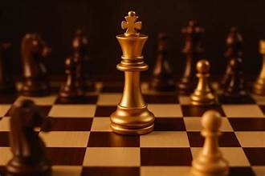
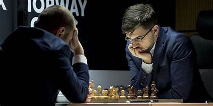

Tactique
Le sacrifice d'attraction : comment forcer le mat en 3 coups
- 17 Mars 2026
- 12 Commentaires

Les 5 meilleures ouvertures pour les débutants en 2026
- 20 Mars 2026
- 5 Commentaires
Découvrez les ouvertures les plus adaptées pour débuter aux échecs : l'Italienne, la Sicilienne, le Gambit Dame et bien d'autres expliqués simplement.

Comment battre une défense Sicilienne
- 18 Mars 2026
- 8 Commentaires
La défense Sicilienne est l'une des plus populaires contre 1.e4. Voici les meilleures lignes pour les blancs afin de maintenir l'initiative tout au long de la partie.
Le Gambit Dame : offrir un pion pour dominer le centre
- 15 Mars 2026
- 6 Commentaires
Le Gambit Dame est une ouverture classique qui consiste à offrir un pion pour obtenir un meilleur contrôle du centre. Stratégie, pièges et variantes expliqués.

Maîtriser les fins de parties : guide complet
- 10 Mars 2026
- 11 Commentaires
Les fins de parties sont souvent négligées par les débutants. Pourtant, savoir convertir un avantage en victoire est une compétence essentielle pour progresser.